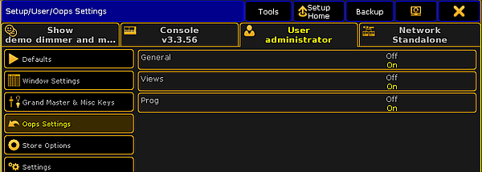

By using the oops functions, you can easily undo actions.
Oops / undo the latest action
Important:
An oopsed / undone action cannot be reversed.
To oops / undo the latest actions:
Press Oops.
The Confirm Undo pop-up opens.
Confirm Undo pop-up
Tap Ok or press Please.
The latest action is undone.
Oops / undo more actions
Important:
After saved changes in the Patch & Fixture Schedule, the Oops list begins of new.
Important:
An oopsed / undone action cannot be reversed.
To oops / undo more actions:
Press and hold the Oops key until the Multi-Oops pop-up opens.
Multi-Oops pop-upNote:
To select more actions, you have to start from the latest action and go backwards.
It is not possible to select just one action in the middle of the list and undo them.
Select the action you want to undo by tap in the list or turn the screen encoder.
The selected actions have a green background. The amount of the selected actions is displayed in the button in the bottom left corner of the window.
Tap Undo x Actions.
The selected actions are undone.
Set oops settings
By default, everything the following actions will be list in the oops list:
General (Setup settings)
Views (View changes)
Prog (Programmer Actions)
You can customize the oops settings to your need. For example, if you want to have only the programmer actions in the oops list and not every view change, deactivate the views from the oops settings.
To change the oops settings:
Press Setup, tap at User, and tap at Oops Settings.
The Oops Settings menu opens.

Oops Settings menu
Tap at the settings you want to enable or disable.
The oops settings are changed and saved in the show file and in the user profile.
Revert to a previously saved show file version
Every time you saved the show, the previous state of the show file will be saved as a .backup file. The grandMA2 creates up to ten .backup files. After the tenth .backup file is created, the first .backup file will be deleted. This allows to revert a previously saved show file version.
Press Backup.
The Backup menu opens.
Select the drive tab and tap at Load Show.
Load Show - Viewing Shows & Backups
Tap at the view button until Viewing Shows & Backups or Viewing Backups appears.
Now, you can see all saved shows as .show.gz file and their backups as .backup file.
Tap at the .backup file you want to revert and select the data you want to load.
Hint:
If you are not sure what data you have changed, we recommend to load all data. Tap Check All.